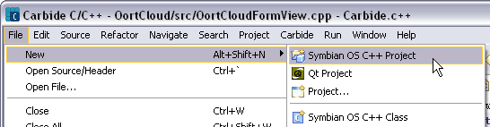
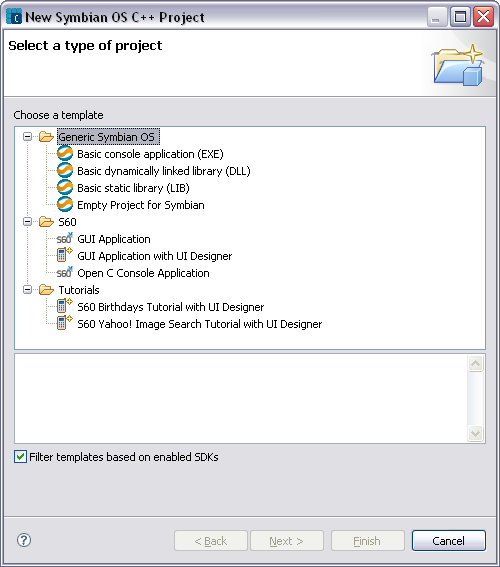
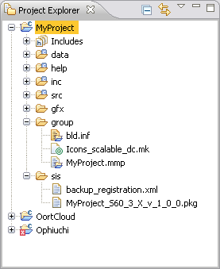

A new Symbian OS C++ project can be created using the New Project Wizard. A number of templates are available that support different SDKs and executable types.
NOTE There must be at least one recognized SDK installed before you can create a project. See the SDK Preferences panel to determine if the installed SDKs are recognized by Carbide.c++ IDE. If the SDK you have is not recognized, you may still be able to add it to the Discovered Symbian OS SDK list.
NOTE When creating or importing projects the sources and SDK must be on the same drive. This is due to many of the internal SDK tools using an implicit working drive to calculate paths (e.g. \epoc32\tools). Avoid spaces in SDK paths since this will also cause problems.
Creating New Symbian OS C++ Projects
- Select File > New > Symbian OS C++ Project to invoke the New Project wizard.
- The New Symbian OS C++ Project wizard appears. Select a template related to an installed SDK. Select the "Filter templates based on enabled SDKs" option to list only SDKs enabled in the SDK Preferences panel. Unselect this option to list SDKs that can be used with Carbide. Click Next.
- Enter a name for your project. Enable the Use default location option to save the project in the current workspace. Unselect this option to save your project to another location. Enter the path in the Location field or click Browse button to locate the directory. Click Next.
- Select the SDKs and Build Configurations. Enable the Filter SDKs based on selected template option to show only the build configurations based on the SDK template you previously selected. Uncheck this option to show all enabled SDKs and their related build configurations.
- Click Next to set project properties in the Basic Settings page:
- For GUI applications, it is always 0x100039CE
- For static interface DLLs, the UID 2 is always 0x1000008d
- For polymorphic DLLs, the UID2 is defined by the framework which is being implemented
- Click Next to move to the Project Directories page.
- Accept the defaults or enter the names for Include and Source folders to be created under the project root directory. Generated files will be copied to these directories.
- Click Finish to create the project, which will generate the necessary files for the project based on the template selected and show them in the C/C++ Projects view.

A project template provides an initial set of source files and project settings appropriate for the project type that you have chosen. The text at the bottom of the window provides a brief description of each template. The project type determines the type of program that you are writing.
NOTE If the selected template requires user input, additional wizard pages will collect data from the user before creating the project.


NOTE There will be two builders available in Carbide, one for SBSv1 (current version of Symbian Build System) and one for SBSv2 (newer version). The Builder option will only be displayed when a SBSv2 installation is detected.
SBSv2 only works with recent versions of Symbian OS9.5. Both SBSv1 and SBSv2 are GNU make based build systems. SBSv1 uses Perl to generate make files, while SBSv2 uses Python. Select the appropriate builder for your project.
When building for SBSv2, the builder will set EPOCROOT to the absolute path (including drive letter) to the kit for the active build configuration. It will also add the path to the sbs bin directory to the start of the PATH variable. This is derived from the SBS_HOME environment variable.For SBSv2, all build configurations (platform/target), including the built-in platforms (WISNCW, ARMV5), are declared in xml files in the \sbs\lib\config directory. The Build Configurations selection page will display only those kits known to support SBSv2.

The Symbian OS SDKs wizard page shows a tree of the SDKs that are available to be used, and for each SDK, the type of builds that can be done. You can select a single SDK if you are developing the program for just one version of a platform, or multiple SDKs if you intend to build your program for multiple build platforms or SDK versions.
The build configuration allows you to choose the compiler(s) to do the build, and whether debug and/or release builds are required. For this example we recommend using the Emulator Debug version as the build configuration. Later, you can switch to another build configuration to create the project for a specific device.

NOTE The basic properties for a project may change based on the template selected for a particular project type.
Fill in the applicable fields, which may include UID2, UID3, Vendor ID, Author, Support Email, Copyright notice and Target Type for console EXEs.
Application UID (or UID3) is used to uniquely identify the binary (EXE or DLL) within the system. The purpose of UID 3 is to prevent one executable from interfering the operation of another executable.
A Vendor ID (VID) is a unique identifier for the organization that is supplying the program. In versions of Symbian OS with platform security, a program can read a VID at runtime to check that a binary comes from a particular source. In most cases, the VID should be zero, meaning that source of the executable is not required for any security checks.
UID 2 is a unique identifier number that identifies the type of interface that the project implements. The values are defined by Symbian
Author, Copyright notice, and Text to be shown are used in comments created by the wizard in the source code.
For more information on UIDs and Vendor IDs, see Symbian Signed, which allocates these values.

NOTE The project directories depends on the template selected. That is, the directories required to store project data may change based on the template selected.

NOTE If the Carbide.c++ perspective is not visible, select the Window > Open Perspective > Other... command to list all available perspectives, then select the Carbide.c++ perspective and click OK.